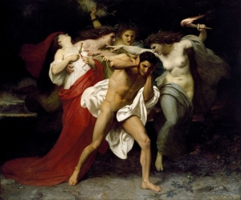
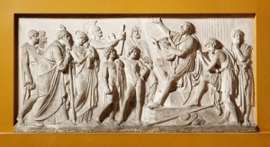

A basic level guide to some of the best known and loved works of prose, poetry and drama from classical antiquity
The distinction between “classic literature” and “classical literature” is somewhat ill-defined and arbitrary, and the terms are often used interchangeably. But, whereas “classic” generally denotes quality, excellence and timelessness, “classical” usually has additional connotations of antiquity, archetype and influence. The very definition of what constitutes “literature” is itself largely subjective, however, and scholars have always disagreed concerning when written record-keeping became more like “literature” than anything else.In practice, classical literature generally refers to the literature of Ancient Greece and the Golden and Silver Ages of Rome, although there are also classical literary traditions in many other ancient civilizations. The label is sometimes used to describe English and French literature of the 17th Century and early 18th Century (Shakespeare, Spenser, Marlowe, Jonson, Racine, Molière, et al), but I have not followed this practice, and have limited myself to ancient (pre-medieval) texts, essentially between about 1000 BCE and 400 CE.
There are already many websites devoted to both classic literature and classical literature. This is just another such, although my intention in this website is to emphasize ease of use over authoritativeness, and perspective over comprehensiveness. It is intended to be a basic level guide to some of the best known and loved works of classical prose, poetry and drama from ancient Greece, Rome and other ancient civilizations, and is intended to elicit basic level responses like “Oh, that was HIM, was it?” and “I thought all Greek plays were tragedies.” In addition to a general overview of the main classical traditions of Ancient Greece, Ancient Rome and Other Ancient Civilizations, I have provided brief biographies of the most important classical writers, and brief summaries of some of their main individual works. There is also a quick reference chronological timeline and an alphabetical index of the authors and individual works covered, as well as an index of important characters which appear in them.
 